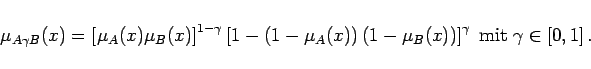
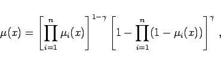
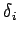
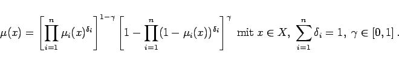

Inhalt Index DeskTop Bronstein

 Algebra und Diskrete Mathematik Fuzzy-Logik Verknüpfungen unscharfer Mengen
Algebra und Diskrete Mathematik Fuzzy-Logik Verknüpfungen unscharfer Mengen


Gelegentlich benötigt man Operatoren, die zwischen den t- und s-Normen liegen; sie werden kompensatorische Operatoren genannt. Beispiele für kompensatorische Operatoren sind der Lambda- und der Gamma-Operator.
|  | (5.380) |
Die Anwendung des Gamma-Operators auf beliebig viele unscharfe Mengen ist gegeben durch
|  | (5.381) |
und mit einer Wichtung  versehen ergibt sich:
|  | (5.382) |